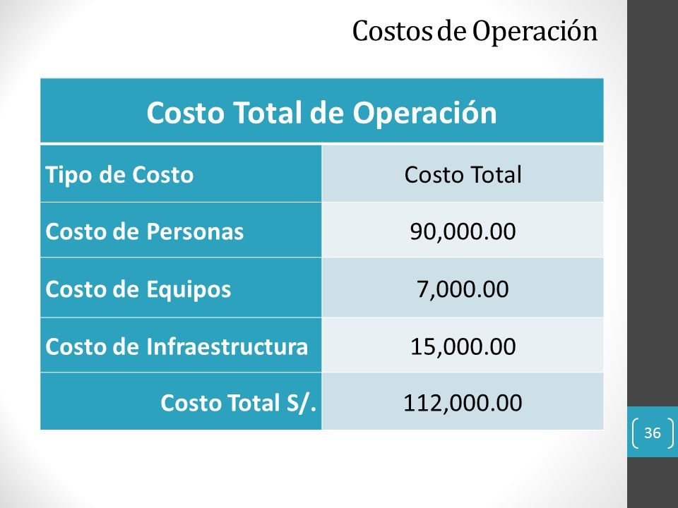

total cost of operation
Expenses include all costs to operate, but in general they can be divided into two main categories: maintenance and administration. Maintenance costs are more related to the product (manufacturing, maintenance and improvements), while administration costs are related to documentation and employees (payroll, accounting and bank charges, office rental, etc.). In addition, your operating costs can be divided into other categories of trailer: fixed costs and variable costs.
